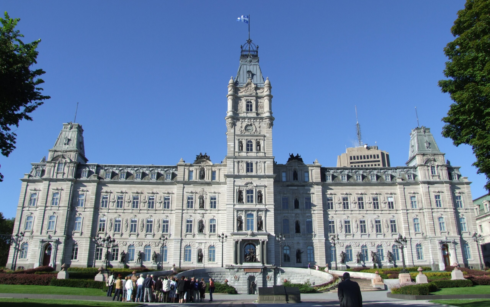
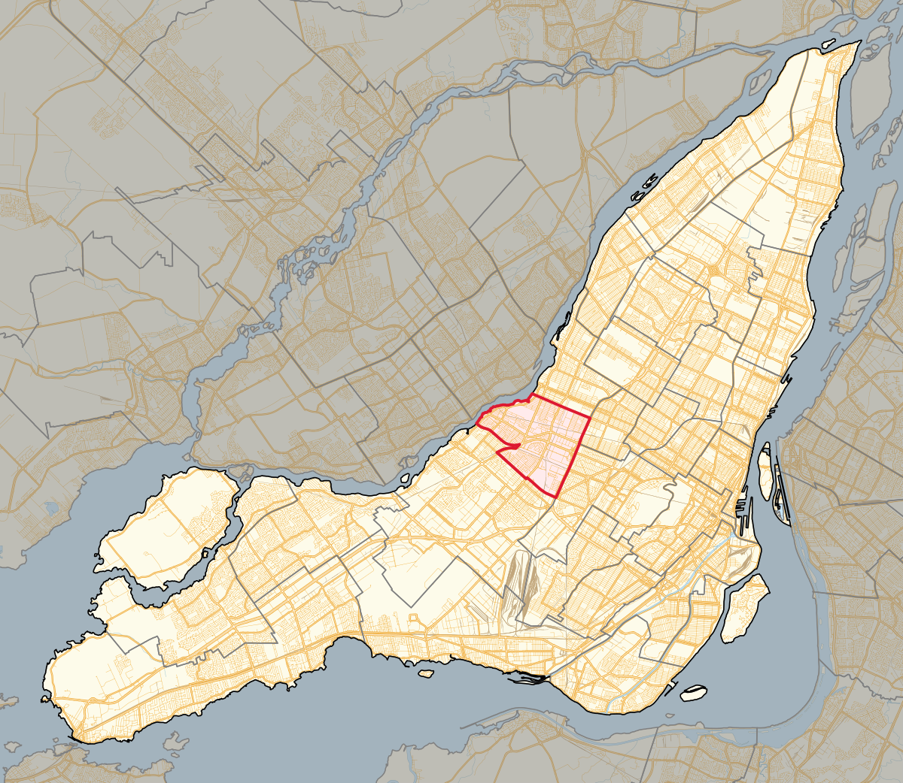
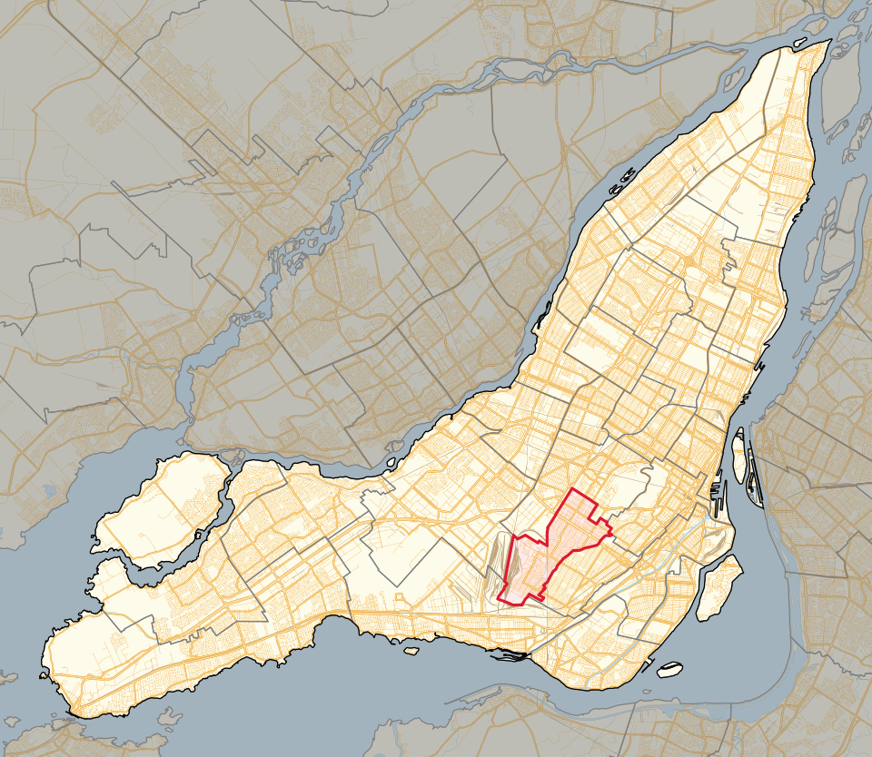
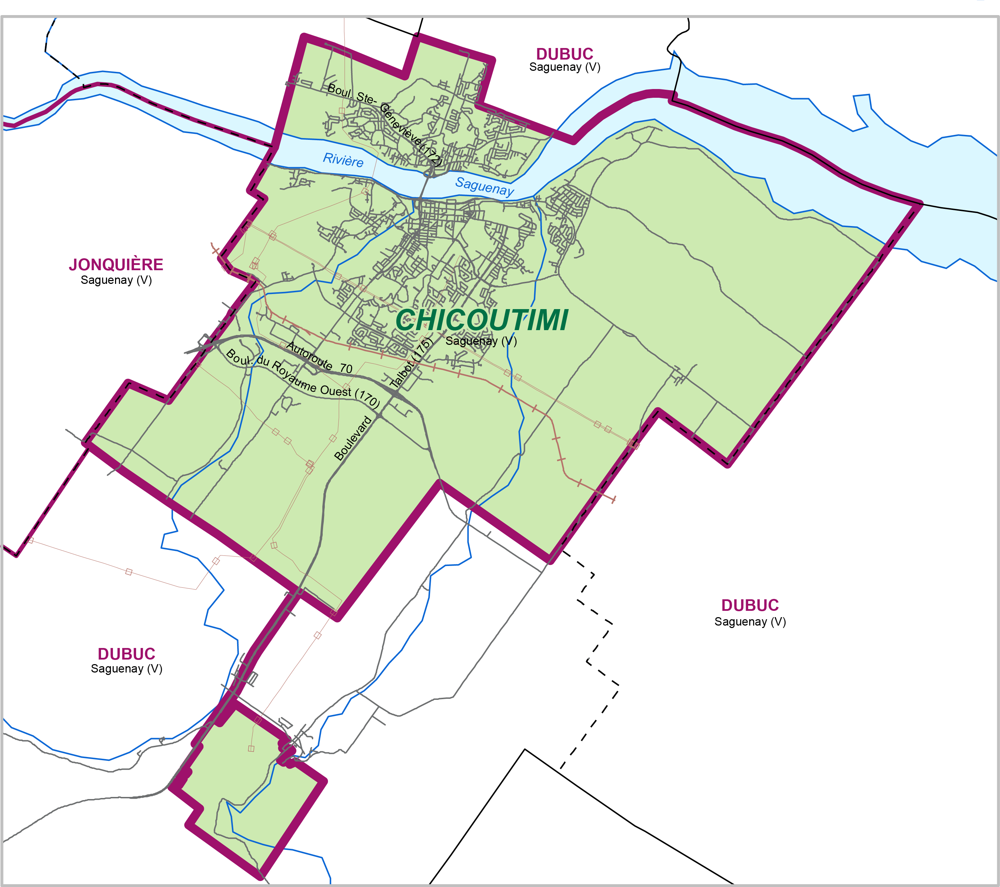
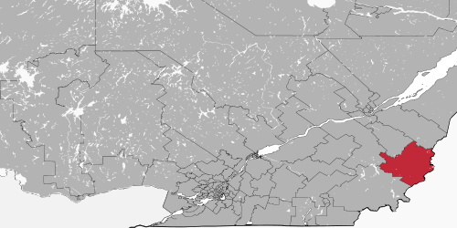
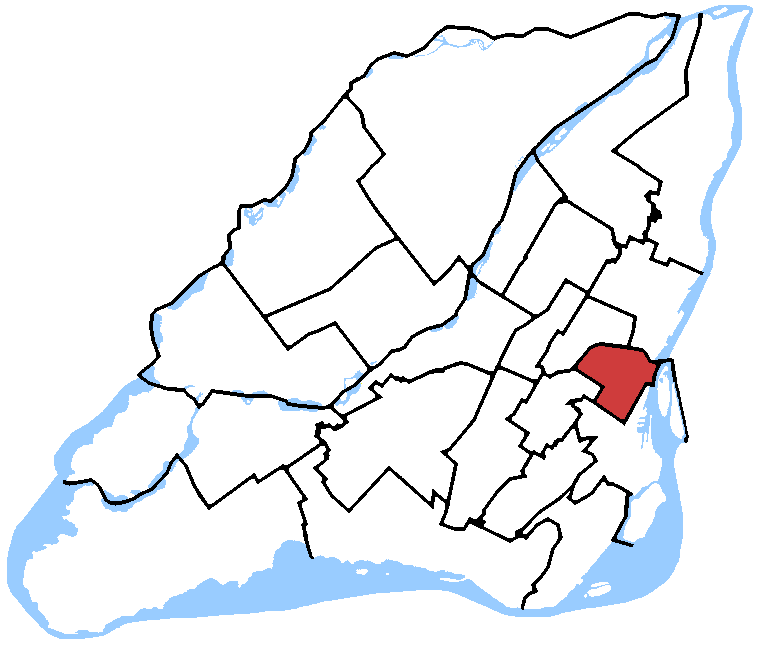
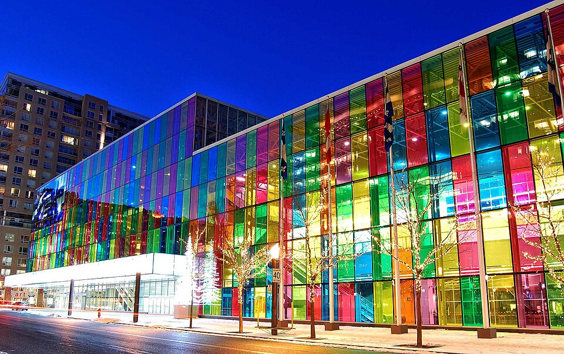
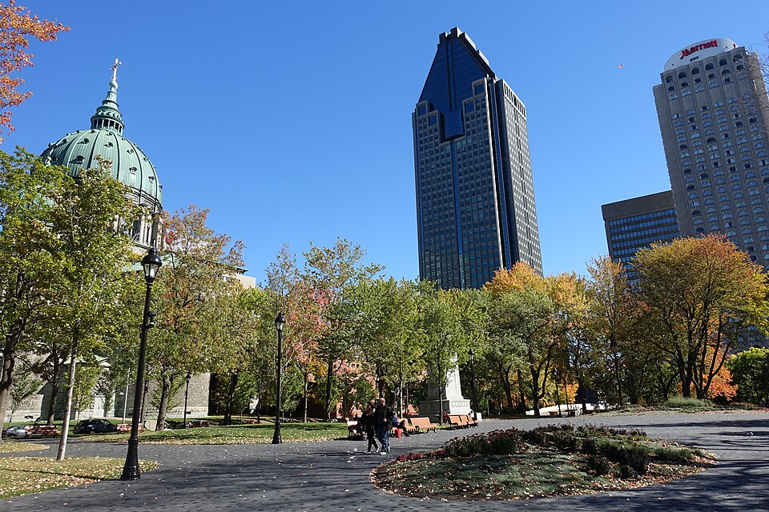
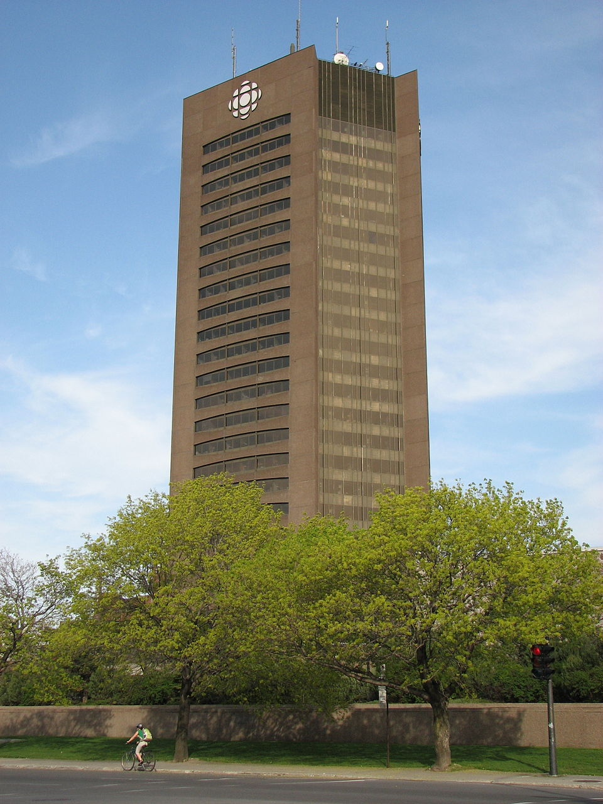

<!DOCTYPE html>
<html lang="fr">
<head>
<meta charset="utf-8" />
<title>Référendum québécois de 1995 – Carte interactive</title>

<link rel="icon" type="image/png" href="fleur.png">

<meta name="viewport" content="width=device-width, initial-scale=1.0">

<link
  rel="stylesheet"
  href="https://unpkg.com/leaflet@1.9.4/dist/leaflet.css"
/>

<!-- ✅ Google Font : Ledger -->
<link href="https://fonts.googleapis.com/css2?family=Ledger&display=swap" rel="stylesheet">

<style>
  body {
    margin: 0;
    font-family: 'Ledger', serif;
  }
  #map {
    height: 100vh;
    width: 100%;
  }
  /* Optionnel: rendre le menu un peu plus lisible */
  .leaflet-control-layers {
    font-size: 14px;
  }
</style>
</head>

<body>

<div id="map"></div>

<script src="https://unpkg.com/leaflet@1.9.4/dist/leaflet.js"></script>

<script>
/* ======================
   CARTE DE BASE
====================== */
const map = L.map('map').setView([46.8, -71.2], 6);

L.tileLayer('https://{s}.tile.openstreetmap.org/{z}/{x}/{y}.png', {
  attribution: '&copy; OpenStreetMap'
}).addTo(map);

/* ======================
   GROUPES (CATÉGORIES)
====================== */
const layerInstitution = L.layerGroup().addTo(map);
const layerMedia       = L.layerGroup().addTo(map);
const layerOui         = L.layerGroup().addTo(map);
const layerNon         = L.layerGroup().addTo(map);
const layerSymbolique  = L.layerGroup().addTo(map);

/* ======================
   ICÔNES
====================== */
const EMOJI_SIZE = 36;

function bigEmojiIcon(emoji) {
  return L.divIcon({
    html: `<span style="font-size:${EMOJI_SIZE}px; line-height:${EMOJI_SIZE}px;">${emoji}</span>`,
    className: "",
    iconSize: [EMOJI_SIZE, EMOJI_SIZE],
    iconAnchor: [EMOJI_SIZE / 2, EMOJI_SIZE],
    popupAnchor: [0, -EMOJI_SIZE]
  });
}

const iconInstitution = bigEmojiIcon("🏛️");
const iconMedia       = bigEmojiIcon("📰");
const iconCanada      = bigEmojiIcon("🇨🇦");
const iconStar        = bigEmojiIcon("⭐");

// ✅ Fleur de lys BLEUE (ton image)
const LYS_SIZE = 36;
const iconLys = L.icon({
  iconUrl: "fleur.png",
  iconSize: [LYS_SIZE, LYS_SIZE],
  iconAnchor: [LYS_SIZE / 2, LYS_SIZE],
  popupAnchor: [0, -LYS_SIZE]
});

/* ======================
   FONCTION AJOUT MARKER
====================== */
function addMarker(layerGroup, lat, lng, icon, title, text) {
  return L.marker([lat, lng], { icon })
    .addTo(layerGroup)
    .bindPopup(`<h3>${title}</h3><p>${text}</p>`)
    .on('click', function () {
      map.setView([lat, lng], 11);
    });
}

/* ======================
   LIEUX INSTITUTIONNELS (Québec)
====================== */
addMarker(
  layerInstitution,
  46.8080, -71.2170,
  iconInstitution,
  "Assemblée nationale du Québec",
  `
  
  L’Assemblée nationale constitue le cœur institutionnel du pouvoir politique québécois. En 1995, elle est le lieu où se cristallisent les débats constitutionnels et où s’élabore le projet souverainiste porté par le gouvernement du Parti québécois. Les analyses de la dynamique État–société montrent que la souveraineté est pensée comme l’aboutissement d’un processus de renforcement de l’État québécois depuis la Révolution tranquille.<br><br>
  <b>Source :</b> Alain-G. Gagnon, <i>Québec : État et société</i>.
  `
);


addMarker(
  layerInstitution,
  46.8065, -71.2164,
  iconInstitution,
  "Édifice Honoré-Mercier",
  `
  
  Siège du Conseil exécutif, l’édifice Honoré-Mercier symbolise le pouvoir gouvernemental exercé par le Parti québécois durant la campagne référendaire. Il représente le lieu de coordination politique où s’articulent à la fois la stratégie référendaire et la préparation d’un éventuel passage à la souveraineté.<br><br>
  <b>Source :</b> Alain-G. Gagnon.
  `
);

/* ======================
   CIRCONSCRIPTIONS ET DYNAMIQUES DU VOTE
   (OUI = iconLys ; NON = iconCanada)
====================== */
addMarker(
  layerNon,
  45.5280, -73.6100,
  iconCanada,
  "Acadie (Montréal) – 78,78 % NON",
  `
  
  La circonscription d’Acadie est emblématique du vote massif en faveur du NON dans l’ouest et le centre de Montréal. Les résultats montrent une forte corrélation entre comportement électoral, composition linguistique et dynamique identitaire. Cette circonscription illustre le poids décisif du vote non francophone dans l’issue finale du référendum.<br><br>
  <b>Source :</b> Élections Québec ; Pierre Drouilly.
  `
);

addMarker(
  layerNon,
  45.4946, -73.6565,
  iconCanada,
  "D’Arcy-McGee (Montréal) – 96,38 % NON",
  `
  
  La circonscription de D’Arcy-McGee constitue le cas le plus extrême de vote fédéraliste lors du référendum de 1995. Avec 96,38&nbsp;% de votes en faveur du NON, elle illustre de manière spectaculaire la concentration territoriale du rejet du projet souverainiste à Montréal, fortement corrélée à la présence de communautés non francophones.<br><br>
  <b>Résultats :</b> OUI 3,62&nbsp;% — NON 96,38&nbsp;%<br>
  <b>Source :</b> Élections Québec, Référendum de 1995.
  `
);

addMarker(
  layerOui,
  48.4284, -71.0526,
  iconLys,
  "Chicoutimi – 68,87 % OUI",
  `
  
  Chicoutimi est l’une des circonscriptions les plus fortement souverainistes du Québec lors du référendum de 1995. Avec près de 69&nbsp;% de votes pour le OUI, elle incarne l’appui massif des régions du Saguenay–Lac-Saint-Jean au projet souverainiste, souvent interprété comme l’expression d’un nationalisme régional fortement enraciné.<br><br>
  <b>Résultats :</b> OUI 68,87&nbsp;% — NON 31,13&nbsp;%<br>
  <b>Source :</b> Élections Québec, Référendum de 1995.
  `
);


addMarker(
  layerNon,
  46.1235, -70.6794,
  iconCanada,
  "Beauce-Sud – 57,54 % NON",
  `
  
  Beauce-Sud représente un profil distinct, celui d’une région majoritairement francophone mais néanmoins favorable au NON. Ce résultat souligne que le clivage référendaire ne se réduit pas uniquement à la langue, mais qu’il intègre aussi des facteurs économiques, culturels et idéologiques.<br><br>
  <b>Source :</b> Élections Québec ; Pierre Drouilly.
  `
);


addMarker(
  layerOui,
  45.5210, -73.5800,
  iconLys,
  "Laurier–Sainte-Marie",
  `
  
  Cette circonscription illustre un vote urbain francophone plus favorable au OUI, contrastant avec les secteurs montréalais dominés par le NON. Elle permet de nuancer la lecture strictement linguistique du vote en montrant l’importance des dynamiques sociales et politiques propres aux quartiers centraux.<br><br>
  <b>Source :</b> Élections Québec ; Pierre Drouilly.
  `
);


/* ======================
   LIEUX SYMBOLIQUES ET DISCURSIFS
====================== */
addMarker(
  layerSymbolique,
  45.5049, -73.5606,
  iconStar,
  "Palais des congrès de Montréal",
  `
  
  Le Palais des congrès est le lieu où Jacques Parizeau prononce son allocution le soir du 30 octobre 1995. Ce discours devient un moment charnière de l’histoire politique québécoise en raison de ses propos sur « l’argent et les votes ethniques », révélant les tensions identitaires au cœur du débat référendaire.<br><br>
  <b>Source :</b> Discours de Jacques Parizeau (30 octobre 1995) ; Carol-Ann Bellefeuille.
  `
);


addMarker(
  layerSymbolique,
  45.5017, -73.5726,
  iconStar,
  "Place du Canada",
  `
  
  La Place du Canada constitue un espace public symbolique de mobilisation et de visibilité politique au centre-ville de Montréal. Elle illustre l’occupation de l’espace urbain comme outil de légitimation et de mise en scène des positions politiques durant la campagne référendaire.<br><br>
  <b>Source :</b> Carol-Ann Bellefeuille.
  `
);


/* ======================
   LIEUX MÉDIATIQUES
====================== */
addMarker(
  layerMedia,
  45.5316, -73.5735,
  iconMedia,
  "Maison de Radio-Canada",
  `
  
  La Maison de Radio-Canada joue un rôle central dans la couverture médiatique du référendum de 1995. En tant que média public, elle participe à la structuration du débat et à la diffusion des discours politiques, tout en étant au cœur des critiques concernant la neutralité et l’impact des médias dans un contexte fortement polarisé.<br><br>
  <b>Source :</b> Carol-Ann Bellefeuille.
  `
);

addMarker(
  layerMedia,
  45.5097, -73.5683,
  iconMedia,
  "La Presse",
  `
  
  La Presse est un acteur médiatique majeur du camp francophone lors du référendum de 1995. Son traitement du référendum contribue à façonner l’opinion publique et à encadrer le débat dans des termes à la fois politiques et identitaires, notamment dans la réception du discours de Jacques Parizeau.<br><br>
  <b>Source :</b> Carol-Ann Bellefeuille.
  `
);

/* ======================
   MENU (FILTRE PAR CATÉGORIES)
====================== */
/* ======================
   MENU (FILTRE PAR CATÉGORIES) — version robuste
====================== */

// Libellé HTML (sans backticks dans l'objet)
const labelOui =
  '' +
  'Souverainistes (OUI)';

const overlays = {};
overlays["🏛️ Institutionnels"]   = layerInstitution;
overlays["📰 Médiatiques"]       = layerMedia;
overlays[labelOui]              = layerOui;
overlays["🇨🇦 Fédéralistes (NON)"] = layerNon;
overlays["⭐ Symboliques"]       = layerSymbolique;

L.control.layers(null, overlays, { collapsed: false }).addTo(map);


/* ======================
   POPUP D’INTRODUCTION
====================== */
const introPopup = L.popup({
  maxWidth: 450,
  minWidth: 350,
  closeButton: true,
  autoClose: true,
  closeOnClick: true,
  className: "intro-popup"
})
.setLatLng([46.8, -71.2])
.setContent(`
  <h2>Référendum québécois de 1995</h2>
  <p>
    Cette carte interactive présente les lieux institutionnels, médiatiques
    et symboliques ayant marqué la campagne référendaire de 1995, ainsi que
    certaines dynamiques territoriales du vote.
  </p>
  <p>
    Utilise le menu (en haut à droite) pour afficher ou masquer des catégories,
    puis clique sur les marqueurs pour zoomer sur les lieux.
  </p>
  <p style="font-size:0.9em; color:#555;">
    (Clique n’importe où sur la carte pour fermer cette fenêtre)
  </p>
`)
.openOn(map);

// 👉 Dès que l’utilisateur clique sur la carte, la popup disparaît
map.once("click", function () {
  map.closePopup(introPopup);
});

/* ======================
   GÉOLOCALISATION UTILISATEUR
====================== */

map.locate({ setView: false, maxZoom: 12 });

map.on('locationfound', function (e) {
  // Cercle de précision
  const radius = e.accuracy;

  L.circle(e.latlng, {
    radius: radius,
    color: '#3366cc',
    fillColor: '#3366cc',
    fillOpacity: 0.15
  }).addTo(map);

  // Marqueur position
  L.marker(e.latlng)
    .addTo(map)
    .bindPopup("📍 Vous êtes ici")
    .openPopup();

  // Centrer la carte
  map.setView(e.latlng, 10);
});

map.on('locationerror', function () {
  alert("La géolocalisation n’a pas pu être activée.");
});


</script>

</body>
</html>
